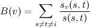

Nodos más influyentes en un grafo con networkx. Parte 4.
Posted on dom 11 agosto 2013 in Tutorial Python • 2 min read
En la parte 3 de creación de grafos se muestra los tipos de grafos que existen, en la parte 2 se muestra como obtener los datos de un archivo que contiene las relaciones de los personajes de la novela Los miserables y en la parte 1 se muestra la creación de grafos.
En este artículo se toma el archivo de la parte 2 para obtener los nodos del grafo más influyentes, los que más se enlazan con otros personajes de la novela.
Este artículo se basa en el artículo en Inglés Betweenness Centrality.
Se usará la librería networkx para tomar la información del archivo lesmiserables.gml , para obtener los nodos más influyentes se usará la centralidad por intermediación.
La centralidad por intermediación se centra en el número de visitas a través de los caminos más cortos.
La centralidad por intermediación se define como:

Donde s(s,t) es el número total de rutas más cortas desde el nodo s al nodo t, y sv(s,t) es el número de los camions que pasan a través de v.
A continuación se muestra el código python que permite calcular los nodos más influyentes por medio de la centralidad por intermediación:
#!/usr/bin/env python
import networkx as nx
from pylab import show, hist, figure
#Leer los datos del archivo lesmiserables.gml
G = nx.read_gml('lesmiserables.gml',relabel=True)
#Funcion que devuelve los nodos mas importantes
def most_important(G):
""" retorna una copia de G con los nodos mas importantes(mas influencia, conexion entre nodos) """
#Se calcula el ranking segun la centralidad
ranking = nx.betweenness_centrality(G).items(
#Se imprime los nodos mas importantes
print ranking
r = [x[1] for x in ranking]
m = sum(r)/len(r) # centralidad
t = m*3 # se mantiene los nodos con promedio de aparicion de 3 veces
Gt = G.copy()
#Se remueve los nodos que no aparecen
for k, v in ranking:
if v < t:
Gt.remove_node(k)
#Se retorna los nodos mas importantes
return Gt
#Se recibe los nodos mas importantes
Gt = most_important(G) # trimming
# se crea el layout
pos = nx.spring_layout(G)
#Se dibuja los nodos y sus bordes
nx.draw_networkx_nodes(G,pos,node_color='b',alpha=0.2,node_size=8)
nx.draw_networkx_edges(G,pos,alpha=0.1)
#Se dibuja los nodos mas importantes con un estilo diferente
nx.draw_networkx_nodes(Gt,pos,node_color='r',alpha=0.4,node_size=254)
# se define las etiquetas
nx.draw_networkx_labels(Gt,pos,font_size=12,font_color='b')
#Se muestra la grafica
show()
La gráfica donde se ve los personajes más influyentes en la novela Los miserables se muestra a continuación:

Esto es útil a la hora de manejar la influencia en redes sociales como twitter.
¡Haz tu donativo! Si te gustó el artículo puedes realizar un donativo con Bitcoin (BTC) usando la billetera digital de tu preferencia a la siguiente dirección: 17MtNybhdkA9GV3UNS6BTwPcuhjXoPrSzV
O Escaneando el código QR desde la billetera: